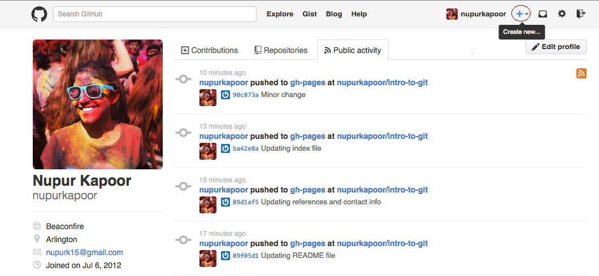

Intro to Git and Github
http://nupurkapoor.github.io/intro-to-git
What on earth is git?
- Version control
- Backing up code
- Code sharing
So what is "version control"?

"Version Control"
- Manage changes to a project without overwriting any part of that project
- History of your changes
- Give a little message about changes on save
- Go back in history
- Multiple versions of code with
branches
Backing up code
- 'Remote repositories'
push-ing,pull-ing- Dropbox for code
- Git is like Dropbox except that with git, you're backing up the history of your files too
- We call each project a repository or a repo
- To get code from it and to put new code on it, we use the verbs push and pull.
Sharing Code
- Code is better with friends!
- Work remotely with a team
Recap on why you should use git
- Save yourself from losing code
- Back up your code because it's smart
- Work with other devs because code is more fun with friends
So what is Github, then?
- Github: https://github.com/
- Website where you can backup your code (like Dropbox)
- See other people's code (open-source)
- Manage your code (repositories)
- Work with other devs to make stuff (
pull requests)
How do git and github talk to each other?
- Command Line: The computer program we use to input Git commands. Terminal for MAC and git bash for Windows
- GUI Tools: https://windows.github.com/ OR https://mac.github.com/
Common terminology
- Repository: A directory or storage space where your projects can live. Shorten to 'repo'. You can keep code files, text files, image files inside a repository.
- Commit: This is the command that gives Git its power. When you commit, you are taking a “snapshot” of your repository at that point in time, giving you a checkpoint to which you can reevaluate or restore your project to any previous state.
- Branch: In multiple-user project scenerios, users “branch off” of the main project with their own versions with changes they themselves have made. After they’re done, it’s time to “merge” that branch back with the “master,” the main directory of the project.
So, let's try it.
Create a new repository

Setting up git on your local machine
- GitHub won’t work on your local computer if you don’t install git.
- Install Git for Windows, Mac or Linux as needed from http://git-scm.com/downloads
- Now it’s time to go over to the command line.
Guide to git for Windows machine
- Go to http://git-scm.com/downloads and install the git for Windows package.
- Along the way, you’ll be asked to choose how you want to use git.
- Select the context menu with Git Bash and Git GUI.
Guide to git for Windows machine
- Then you’ll get the following screen, chose the first option:
Guide to git for Windows machine
- Also when asked in another dialog, choose to make git bash show up in the context menu when you right click a windows folder.
- What is “git bash”? Turns out it’s just a command line interface!
How and WHERE to Run Git
Git tracks files in a folder. Any kind of files in a folder and its subfolders. So you don’t need to have any particular directory structure or any particular file type for it to work.
MAC only
- Search for 'terminal' on your mac
- Open application
MAC only
Setup a dedicated place on your machine for your project
mkdir codecd codemkdir sample-projectcd sample-project
For Windows
- Create a folder with similar directory structure as we discussed earlier
- Now we need to run git inside the “sample-project” folder.
- Navigate to the 'sample-project' folder
- Right click on an empty space in the Window, and select “Git Bash”
- This will open a command prompt that’s already in the folder you want.
Git bash for windows

Common git-specific commands
git initgit configgit help
Common git-specific commands
git statusgit addgit commitgit checkoutgit push
Set up your project internally
touch README.mdgit initgit status
Set up your project internally
git statusgit add README.mdgit commit -m "Our first file"
We now need to link the project/folder we set up on our machine with the repository we created on Github!
Remember this..??
Lets link them both! Copy, paste and run these two commands - one at a time!
- The command
git remote add origin git@github.com:username/name-of-repository.gitcreates a new remote called origin located at git@github.com:username/name-of-repository.git - Once you do this, in your push commands, you can push to origin instead of typing out the whole URL!!
- The
git push -u origin mastercommand says "push the commits in the local branch named master to the remote named origin". - Remember we just named our branch origin in previous step! So remotes are like nicknames for the URL of a repository.
- The .git at the end of the repository name is just a convention.
- On git servers repositories are kept in directories named project.git
And when you refresh github...
Let's make another file
touch index.htmlgit add --allShorthand for 'add everything'git commit -m "Commit message"git push -u origin master
And when you refresh github again...
git log: git logShows the commit logs
Moving forward...

Resources
Try Git in your Browser
Create a Repo
Github Bootcamp
Github Help